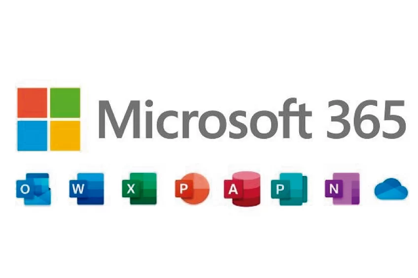
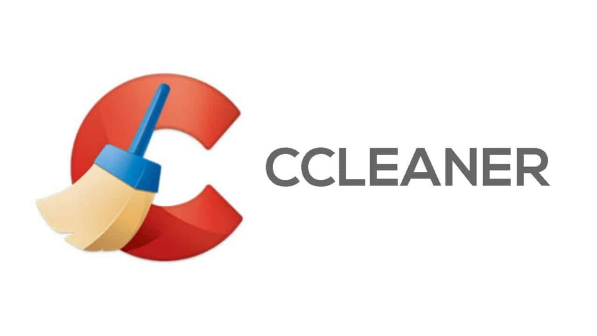
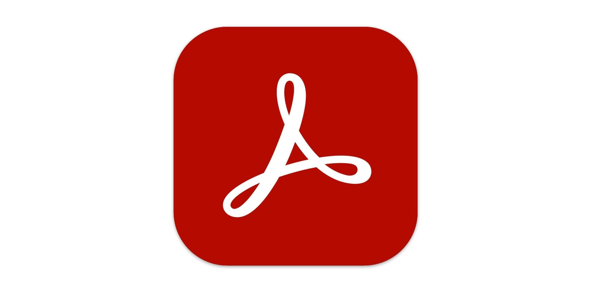

Programas de Software
Sistema Operativo Windows

Es el software principal que administra el hardware y los recursos de una computadora o dispositivo, y proporciona servicios esenciales para que otros programas puedan ejecutarse. Es el intermediario entre los usuarios, las aplicaciones y el hardware.
COMPRARMicrosoft 365
Es un servicio basado en la nube de Microsoft que ofrece una PC virtual a través de una suscripción. Es una solución diseñada para empresas, profesionales y organizaciones que necesitan acceso a un escritorio completo de Windows en cualquier momento y lugar, sin depender del hardware físico del usuario.
COMPRARAntivirus Avast
Es un software de seguridad informática desarrollado por la empresa checa Avast Software. Está diseñado para proteger computadoras, dispositivos móviles y redes contra amenazas digitales, como virus, malware, ransomware, spyware y otras vulnerabilidades de seguridad. Avast es uno de los antivirus más populares del mundo, utilizado tanto por usuarios individuales como por empresas.
COMPRARCCleaner
Es una herramienta de software diseñada para optimizar el rendimiento de computadoras y dispositivos móviles, limpiar archivos innecesarios, y mantener la privacidad del usuario. Fue desarrollada por la empresa Piriform, ahora parte de Avast Software. El propósito principal de CCleaner es mejorar la velocidad y eficiencia del sistema al liberar espacio en el disco y eliminar datos no deseados o temporales.
COMPRARAdobe Acrobat Reader
Es un software desarrollado por Adobe Systems que permite ver, imprimir y interactuar con archivos en formato PDF (Portable Document Format). Es uno de los programas más utilizados para leer archivos PDF en computadoras, dispositivos móviles y tablets.
COMPRAR